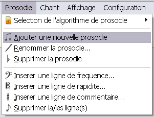
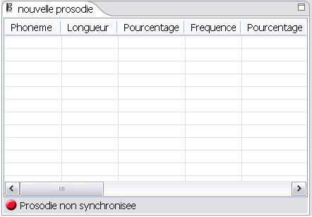

Pour ajouter une nouvelle prosodie vierge à un projet SIVOX, il faut cliquer sur Prosodie > Ajouter une nouvelle prosodie

Le logiciel ajoute alors dans le projet SIVOX une nouvelle prosodie vierge que vous pourrez ensuite synchroniser avec un texte en utilisant un des algorithmes de prosodie.
